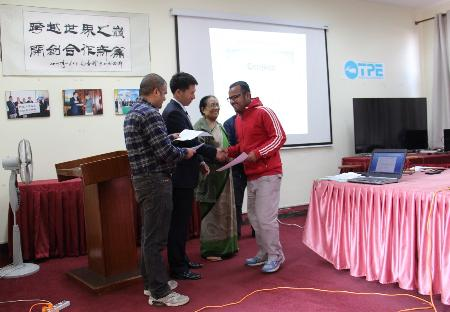
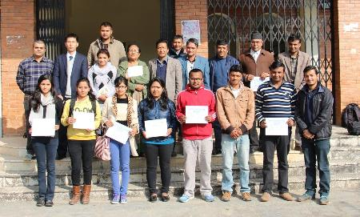

为了更好地发挥海外科教中心的支撑作用，向中国科学院相关研究所推荐优秀博士研究生，加强中尼科教合作，2014年末中国科学院加德满都科教中心（简称“加德满都中心”）主任姚檀栋院士与特里布文大学校领导共同倡议，设立“中国科学院加德满都科教中心优秀硕士生奖学金”。奖学金主要针对特里布文大学科学与技术学院（包括水文气象、地质、环境、植物等中心系）的在读硕士研究生。根据优秀硕士研究生选拔章程，每个系经过竞争性答辩推荐3位候选人。然后，由加德满都中心和特里布文大学科学与技术学院组成的考核委员会，对所有推荐候选人进行现场答辩从每个系选择一位奖学金获得者。此奖学金计划的设立，增强了研究生们的科研热情，也促进了加德满都中心对特里布文大学硕士生培养情况的深入了解。最终，共有10位硕士生通过评审获得2015年度的优秀奖学金。
2015年12月7日，受姚檀栋主任的委托，加德满都中心执行主任梁尔源与特里布文大学科学与技术学院院长Chirika Shova Tamrakar向首批获得中国科学院加德满都科教中心优秀硕士生奖学金的学生颁发了证书。
在颁奖典礼上，梁尔源首先对获得奖学金的各位硕士研究生表示祝贺，并鼓励获奖学生们在国际期刊发表研究论文。另外，梁尔源还向院系领导和学生们介绍了中国科学院的TWAS-CAS奖学金计划，希望他们完成硕士阶段的学习后，能申请TWAS-CAS奖学金到中国科学院相关研究所攻读博士学位。Chirika Shova Tamrakar院长首先向加德满都中心提供的奖学金表示感谢，也向各位获奖同学表示了祝贺，并且勉励他们在后面学习和研究中能够在各自的领域里有所贡献，完成好硕士毕业论文，争取在国际期刊上发表研究论文，并标注由中国科学院加德满都科教中心优秀硕士生奖学金资助，为学校、为以后的研究生做好表率。
特里布文大学科学与技术学院院长助理以及各相关系的系主任、加德满都中心和特里布文大学的联络人Lochan Prasad Devkota、加德满都中心行政主管刘晓波及主任助理Binod Dawadi参加了颁奖典礼。

梁尔源与Chirika Shova Tamrakar向获得奖学金的硕士生颁发证书

获奖学生合影